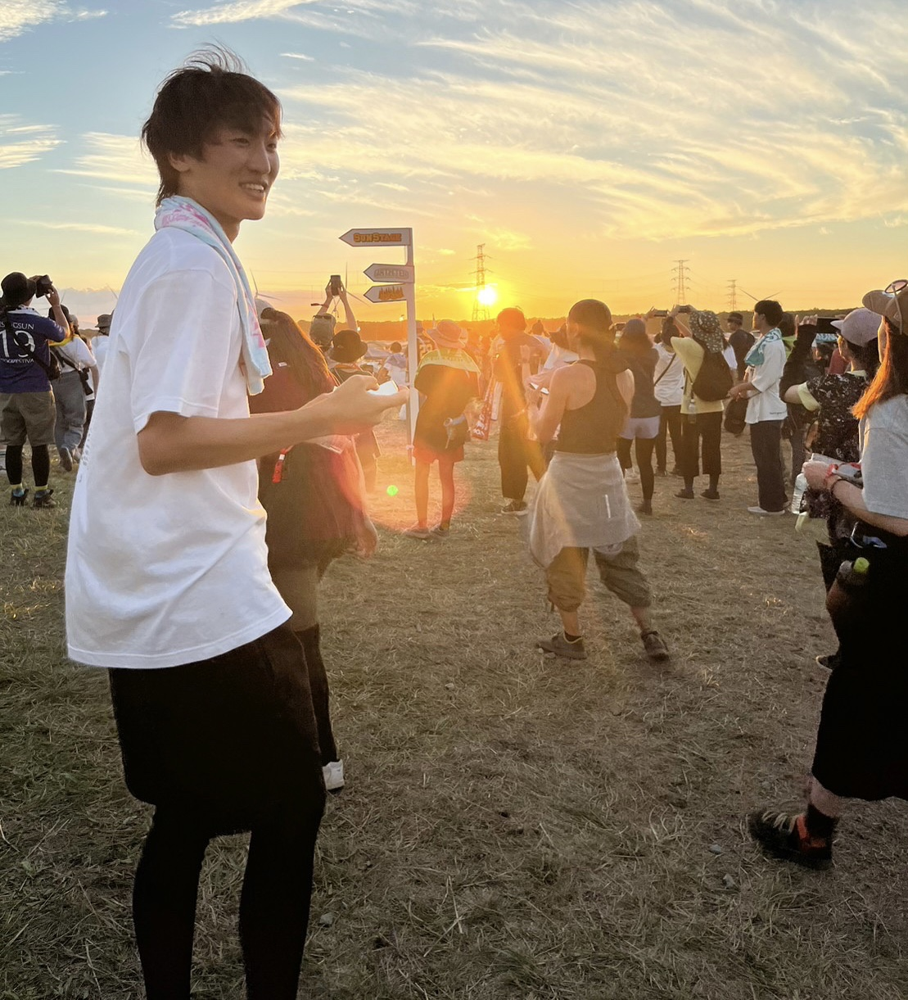
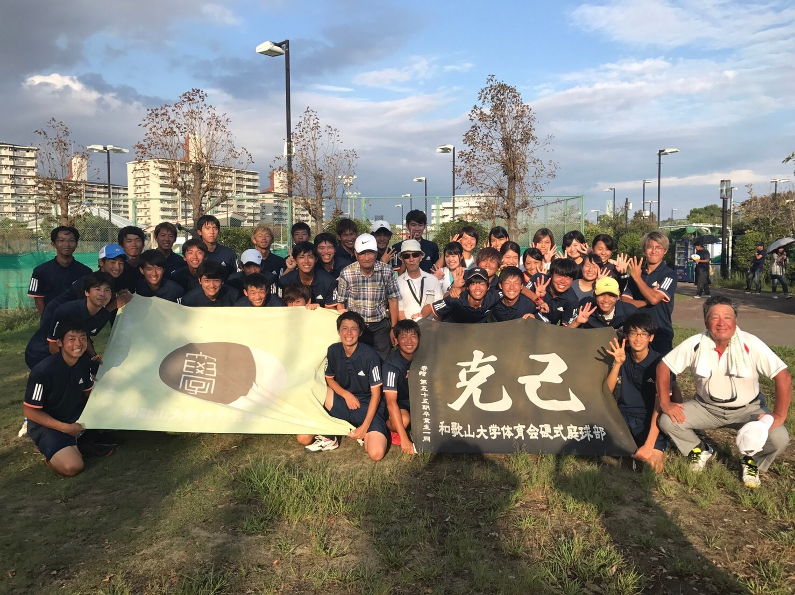
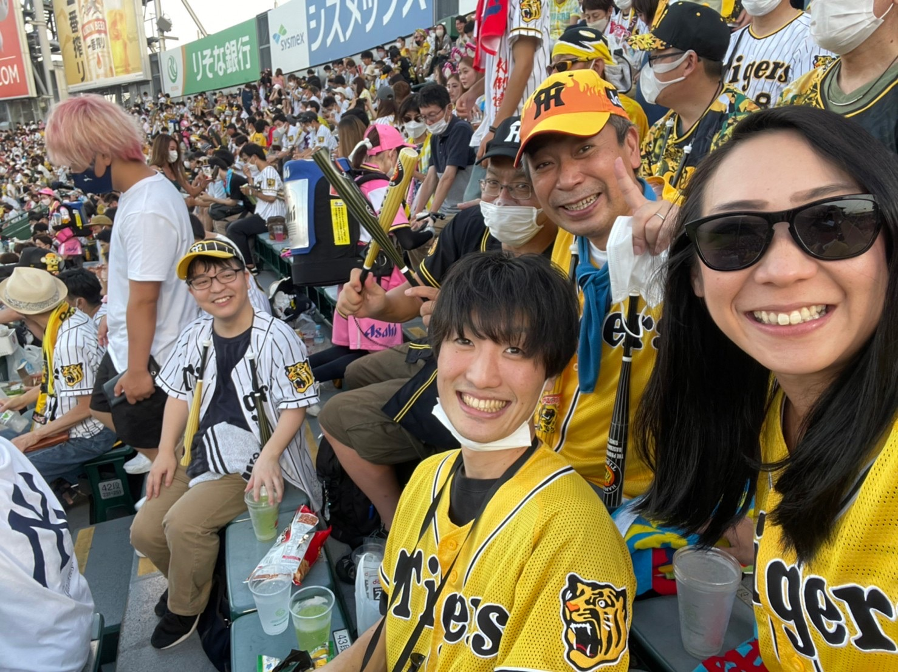
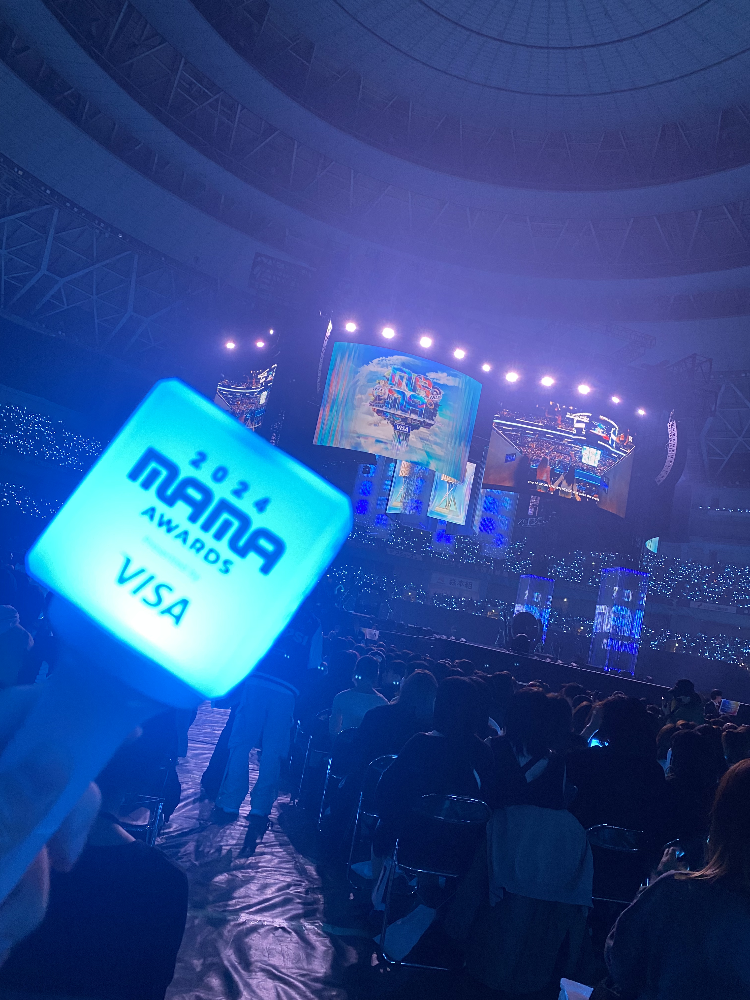

<!DOCTYPE html>
<html></html>

<head>
  <title>NISHIZAKI　KEI</title>
  
  <meta charset="UTF-8">
  <link href="css\humanity.css" rel="stylesheet" type="text/css" media="all" />
  <link href="css\common.css" rel="stylesheet" type="text/css" media="all" />
  <link href="https://fonts.googleapis.com/css2?family=Economica&display=swap" rel="stylesheet">

  <script type="text/javascript" src="js\about.js"></script>
  <script type="text/javascript" src="js\humanity.js" defer></script>

  <script src="js/startWindow.js"></script> <script src="./js/chatbot.js"></script>
</head>
<body>
  <header>
    <div id="about"><div id="aboutInner" class="cf">
        <dl>
          <dt class="font">PROFILE :     </dt>
          <dd>西崎慧　　Nishizaki　Kei<br>
            和歌山県和歌山市　出身<br>
            和歌山大学システム工学部メディアデザインメジャー　卒業<br>
          </dd>
          
          <dt class="font">CONTACT :     </dt>
          <dd><a href="mailto:nszkki.19981116@gmail.com" target="_blank">nszkki.19981116@gmail.com</a></dd>
          
          <dt class="font">ADDRESS :     </dt>
          <dd class="last">大阪府大阪市<br>
            Osakashi, Osakafu Japan</dd>
        </dl>
        <div class="right"></div>
      </div>
    </div>
  </header>
  <body>
    <div id ="wrapper">
      <div id = "header">
        <h1 id="logo"><a href="index.html"></a></h1>
        <div id="btnAbout" class="font">
          <a href="javascript:clickBtn1()">About</a></div><div id="btnClose" class="font">
          <a href="javascript:clickBtn1()">Close</a></div></div><div id="container">
        <div id="articleContainer">
          <div class="section humanity-section" id="humanitySection">
            <div class="mv_title">
              <p class="site_title">Please Be Interested</p>
              <div class="typed_wrap">
                <p>
                  <span class="typed" data-text="気になれば👍ボタンを押すか右スワイプしてください．"></span>
                </p>
              </div>
            </div>

            <div class="profile-card">
              <div class="profile-image-container">
                
              </div>
              
              <div class="profile-tabs">
                <button class="tab-button active" data-tab="profile">プロフィール</button>
                <button class="tab-button" data-tab="aboutme">私について</button> <button class="tab-button" data-tab="gallery">ギャラリー</button>
              </div>

              <div class="tab-content-container">
                <div id="profile" class="tab-content active">
                  <h2>西崎 慧 / Nishizaki Kei</h2>
                  <div class="profile-info">
                    <p><strong>趣味：：</strong><span>テニス、読書、フェス、K-pop、麻雀</span></p>
                    <p><strong>休日の過ごし方：：</strong><span>テニス / 温泉 / 飲み屋</span></p>
                    <p><strong>性格：：</strong><span>協調性 / 負けず嫌い / 柔軟性あり</span></p>
                    <p><strong>MBTI：：</strong><span>ENFJ-A（主人公）</span></p>
                    <p><strong>希望勤務地：：</strong><span>関西圏・フルリモート可</span></p>
                    <p><strong>希望年収：：</strong><span>700万〜</span></p>
                  </div>
                </div>

                <div id="aboutme" class="tab-content">
                  <h3>私の強みとこれからの目標</h3>
                  <p>私はSIer企業にて、クラウド移行や業務改善を中心とした大規模プロジェクトに従事してきたエンジニアです。インフラからアプリケーション開発を経験しており、論理的な設計力と実装力の両方を備えていることが強みです。</p>
                  <p>また、ユーザー視点を重視する姿勢と、他部門と協調しながら解決策を提案してきた経験から、技術と業務をつなぐ橋渡し役としての柔軟性とコミュニケーション能力を培ってきました。</p>
                  <p>今後は、これまでのSIer的な基盤構築・業務設計の力を活かしながら、顧客に対する本質的な課題解決を提供できるようなIT人材を目指したい。</p>
                  <br>
                  <h3>御社での活躍できる点</h3>
                  <p>私はこれまで、素材メーカー向けのDXプロジェクトにおいて、異なる技術要素を組み合わせ実業務に即したシステムを実装してきました。抽象的な要件から論理的に構造を組み立て、業務フローやUI設計を含めて具体化する力は、あらゆる業種で応用可能です。</p>
                  <p>また、単なる開発にとどまらず、プロジェクト推進やベンダーとの調整、ユーザー教育など、上流から下流まで幅広く関与してきた経験もあります。</p>
                  <p>特に、貴社のように多様なプロジェクトが動く環境において、私は「分かりにくい課題を、分かりやすい技術で、現場で使える形にする」ことに貢献できる人材だと自負しています。</p>
                </div>


                <div id="gallery" class="tab-content gallery-grid">
                  <div class="image-wrapper">
                    
                    <p class="caption-popup">夏フェスやライブによく行きます</p>
                  </div>
                  <div class="image-wrapper">
                    
                    <p class="caption-popup">大学時代は体育会のテニス部に所属していました</p>
                  </div>
                  <div class="image-wrapper">
                    
                    <p class="caption-popup">現会社メンバーの応援に行ったときの写真です</p>
                  </div>
                  <div class="image-wrapper">
                    
                    <p class="caption-popup">K-popの音楽祭や授賞式も見に行きます</p>
                  </div>
              </div>

              <div class="action-buttons-container">
                <button class="action-button return-button" id="returnButton">
                  
                </button>
                <button class="action-button like-button" id="goodButton">
                  
                </button>
              </div>

            </div>
          </div>
          
          <div class="modal-overlay" id="matchModal">
            <div class="modal-content">
              <h3>Matchありがとうございます！</h3>
              <p>良ければカジュアル面談してくれませんか？</p>
              <a href="mailto:nszkki.19981116@gmail.com?subject=カジュアル面談希望です" class="modal-email-button">
                メールで連絡する
              </a>
              <button class="modal-close-button" id="closeModal">閉じる</button>
            </div>
          </div>

          <div class="modal-overlay" id="returnMessageModal">
            <div class="modal-content small-modal">
              <h3>もう一度、ご検討ください。</h3>
              <button class="modal-close-button" id="closeReturnModal">閉じる</button>
            </div>
          </div>

        </div></div>

      <ul id="gnav" class="font">
        <li><a href="index.html">Home</a></li>
        <li><a href="projectsList.html">Projects</a></li>
        <li><a href="works.html">Works</a></li>
        <li><a href="infographics.html">Infographics</a></li> 
        <li><a href="humanity.html">Humanity</a></li> 
      </ul>
    </div></div><div class="chat-Container">
    <button class="chat-launcher" id="chat-launcher" type="button"></button>

    <div class="chat-box" id="chat-box" style="display: none;">
      <div class="chat-header">
        AI ChatBot
        <button class="close-button" id="close-button">×</button>
      </div>
      <div class="chat-messages" id="chat-messages"></div>
      <div class="chat-input">
        <input type="text" id="user-input" placeholder="質問してください..." />
        <button id="send-button" type="button">送信</button>
      </div>
    </div>
  </div>

  <div class="col">
    <a href="#top" class="scroll-up-box mr-120" id="page-top">
      TOP
    </a>
  </div>
</body>
<footer>
  <p>&copy; 2025 Kei Nishizaki. All rights reserved.</p>
</footer>
</html>